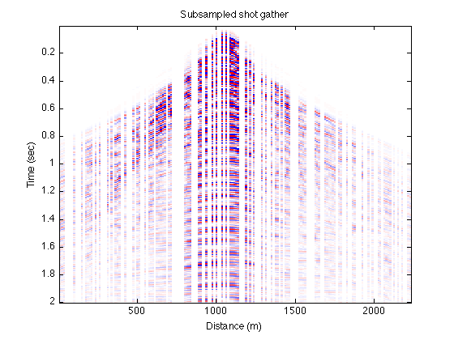
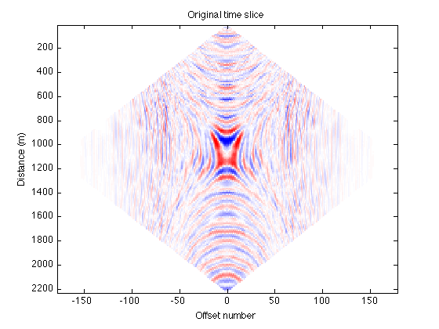
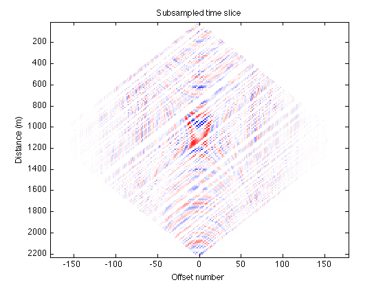
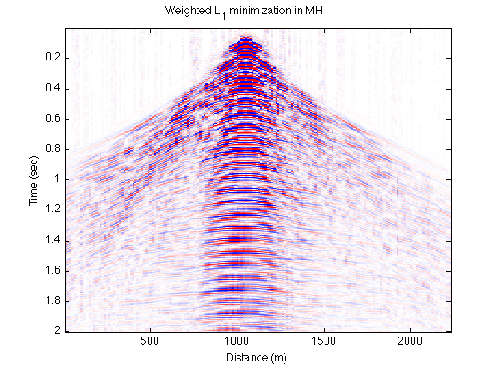
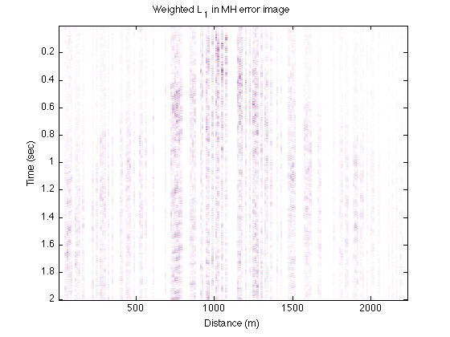
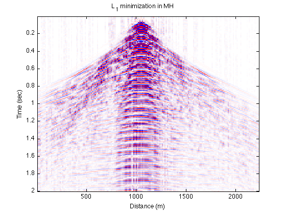
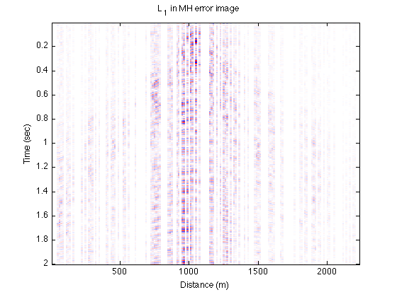

Seismic Trace Interpolation: Examples and results
Scripts to reproduce the reconstruction results found in [1].
Contents
Reconstruction in the midpoint-offset domain
The basic functionality of the trace interpolation code is demonstrated on an example seismic line from the Gulf of Suez. The seismic waveform continuity is exploited across frequency slices in the midpoint offset domain. See the script wL1_freq_MH.m.
Reconstruction using weighted L1 minimization
% Load the data from the output directory label = 'wL1FreqMH'; datadir = '../data/'; outputdir = ['../results/' label]; load([outputdir, '/wL1_freq_MH.mat']); % original and subsampled shot gather shot_num = 84; dim = size(D); DSG = reshape(D(:,:,shot_num),dim(1),dim(2)); DSG_sub = zeros(dim(1),dim(2)); DSG_sub(:,mask(:,1)) = DSG(:,mask(:,1)); figure; imagesc([1:dim(2)]*12.5, [1:dim(1)]*4e-3,DSG);colormap(seiscol); caxis([-50 50]) title('Original shot gather'); xlabel('Distance (m)'); ylabel('Time (sec)'); figure; imagesc([1:dim(2)]*12.5, [1:dim(1)]*4e-3,DSG_sub);colormap(seiscol); caxis([-50 50]) title('Subsampled shot gather'); xlabel('Distance (m)'); ylabel('Time (sec)'); % Original and subsampled time slice time = 350; dim = size(DH); DHt = reshape(DH(time,:,:),dim(2), dim(3)); figure; imagesc([-dim(2):dim(2)], [1:dim(2)]*12.5,DHt); colormap(seiscol); caxis([-50, 50]) title('Original time slice'); xlabel('Offset number'); ylabel('Distance (m)'); figure; imagesc([-dim(2):dim(2)], [1:dim(2)]*12.5,DHt.*maskH); colormap(seiscol); caxis([-50, 50]) title('Subsampled time slice'); xlabel('Offset number'); ylabel('Distance (m)'); % Weighted L1 reconstructed shot gather dim = size(Dest); DestSG = reshape(Dest(:,:,shot_num),dim(1),dim(2)); figure; imagesc([1:dim(2)]*12.5, [1:dim(1)]*4e-3,DestSG);colormap(seiscol); caxis([-50 50]) title('Weighted L_1 minimization in MH'); xlabel('Distance (m)'); ylabel('Time (sec)'); Err_wl1MH = DSG - DestSG; figure; imagesc([1:dim(2)]*12.5, [1:dim(1)]*4e-3,(Err_wl1MH));colormap(seiscol); caxis([-50 50]) title('Weighted L_1 in MH error image'); xlabel('Distance (m)'); ylabel('Time (sec)'); % compute shot gather relative error for s = 1:dim(2) EwL1freqMH_source(s) = norm(vec(D(:,:,s)) - vec(Dest(:,:,s)))/norm(vec(D(:,:,s))); end    
Reconstruction using L1 minimization
Load L1 data from output directory
label = 'L1FreqMH'; datadir = '../data/'; outputdir = ['../results/' label]; load([outputdir, '/L1_freq_MH.mat']); % L1 reconstructed shot gather dim = size(Dest); DestSG = reshape(Dest(:,:,shot_num),dim(1),dim(2)); figure; imagesc([1:dim(2)]*12.5, [1:dim(1)]*4e-3,DestSG);colormap(seiscol); caxis([-50 50]) title('L_1 minimization in MH'); xlabel('Distance (m)'); ylabel('Time (sec)'); Err_l1MH = DSG - DestSG; figure; imagesc([1:dim(2)]*12.5, [1:dim(1)]*4e-3,(Err_l1MH));colormap(seiscol); caxis([-50 50]) title('L_1 in MH error image'); xlabel('Distance (m)'); ylabel('Time (sec)'); % compute shot gather relative error for s = 1:dim(2) EL1freqMH_source(s) = norm(vec(D(:,:,s)) - vec(Dest(:,:,s)))/norm(vec(D(:,:,s))); end 
Compare shot gather SNRs
figure; plot( 1:dim(2), -20*log10(EL1freqMH_source), 1:dim(2), -20*log10(EwL1freqMH_source)); legend('L_1 on freq. in MH', 'W-L_1 on freq. in MH'); xlabel('Shot gather number'); ylabel('SNR')